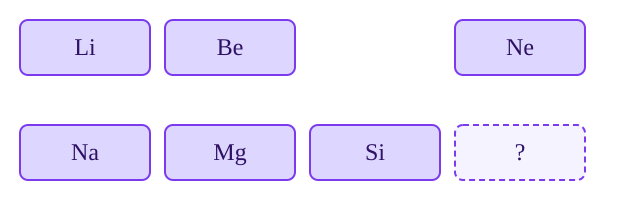

Chemistry pioneer · Patterns · Prediction
Mendeleev leaves room for the unknown
Dmitri Mendeleev arranged elements by repeating chemical properties and atomic weight. The surprising move was leaving gaps—and predicting what those missing elements would be like.
Look for the pattern: A useful table does more than store facts. It makes a blank space feel like a question that evidence can answer.
1. From element lists to a predictive law
- A table of “simple substances” gives chemists a more systematic vocabulary, even though some entries later prove wrong.
- Triads of elements reveal early hints that properties can repeat in families.
- Cannizzaro's use of Avogadro's ideas helps chemists agree on more reliable atomic weights.
- Mendeleev arranges known elements by atomic weight and chemical behavior, leaving gaps instead of forcing a bad fit.
- Gallium, scandium, and germanium appear with properties close to the predictions, strengthening the periodic law.
- X-ray spectra show that atomic number—the number of protons—is the deeper ordering principle.
2. See the scientist and the source table
These public-domain images show both the person and the historical artifact. A portrait tells us almost nothing about a law; the table and its successful predictions provide the stronger evidence.


3. Read the table as a diagram
In this simplified classroom model, elements in a column share broad behavior. Li and Na are reactive +1 metals; Be and Mg commonly form +2 ions; Ne and Ar are very unreactive gases. Because related outer-electron arrangements recur in the modern table, families often share chemical behavior. This is a modern, deliberately incomplete classroom diagram, not Mendeleev’s 1869 arrangement: noble gases were identified later. Read down the column, not simply across the row.

Which description is the best prediction for the blank at the end of the row?
4. Test a historical prediction
Gallium was discovered in 1875 and matched important parts of Mendeleev's predicted “eka-aluminium”: a low melting point, a density near the prediction, and compounds with familiar formulas. The match did not prove every detail of the table, but it made the model much harder to dismiss.
Worked example: quantify a prediction
The Royal Society of Chemistry compares a predicted solid density of 6.0 g/cm³ with gallium’s measured 5.9 g/cm³. The absolute difference is 6.0 − 5.9 = 0.1 g/cm³. Relative to the prediction, 0.1/6.0 × 100 ≈ 1.7%. This close match matters because the prediction preceded discovery; density alone would not uniquely identify an element.
Check: would a measured density of 3.0 g/cm³ be equally convincing?
No. The difference would be 3.0 g/cm³, or 50% of the predicted value. Compare several independently predicted properties before deciding how well a model survived the test.
Data: Royal Society of Chemistry: development of the periodic table. These are rounded historical comparison values.
Sources: Royal Society of Chemistry: periodic table history · Encyclopaedia Britannica: periodic law.